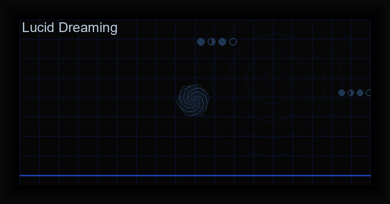

Master Lucid Dreaming: Science-Based Techniques & Best Apps (2026)
What Is Lucid Dreaming?
Lucid dreaming is the phenomenon of becoming consciously aware that you are dreaming while the dream continues. Once lucid, you can influence the dream narrative, explore the dream environment, interact with dream characters, and even practice real-world skills — all while your body remains asleep in REM (Rapid Eye Movement) sleep.
Research published in the journal Consciousness and Cognition (2024) demonstrated that a phone app using targeted sound cues could increase lucid dream frequency from 0.74 to 2.11 per week — a nearly 3x improvement. This confirms what practitioners have known for decades: lucid dreaming is a trainable skill.
The Three Pillars of Lucid Dreaming
Every effective lucid dreaming practice rests on three foundations:
1. Dream Recall
You cannot become lucid in a dream you do not remember. The single most important habit is keeping a dream journal. Write down every dream immediately upon waking, before the memory fades. Over 2-3 weeks, most people see dramatic improvement in recall — from zero dreams to 2-3 per night.
2. Reality Checks
Reality checks are simple tests performed throughout the day to distinguish waking from dreaming. The key is to perform them critically — ask yourself honestly: "Am I dreaming?" The most reliable checks include:
- Nose pinch: Pinch your nose and try to breathe. In a dream, you can still breathe through a pinched nose.
- Digital clock reading: Look at a clock, look away, then look back. In dreams, text and numbers shift randomly.
- Hand inspection: Examine your hands closely. In dreams, they often have too many or too few fingers, or distorted proportions.
- Finger through palm: Try to push your right index finger through your left palm. In a dream, it will pass through.
3. Induction Techniques
MILD (Mnemonic Induction of Lucid Dreams): Developed by Dr. Stephen LaBerge at Stanford. Before sleep, repeat: "Next time I am dreaming, I will remember to recognize that I am dreaming." Visualize yourself becoming lucid in a recent dream. This sets a strong prospective memory cue.
WILD (Wake-Initiated Lucid Dream): You enter a dream directly from a waking state, maintaining consciousness as your body falls asleep. Lie still, focus on hypnagogic imagery (the visual patterns behind closed eyelids), and allow your body to enter sleep while your mind stays awake. Requires practice but produces the most vivid lucid dreams.
WBTB (Wake Back to Bed): Set an alarm for 4.5-6 hours after going to sleep. Wake up, stay awake for 15-45 minutes (read about lucid dreaming, perform reality checks), then go back to sleep. This places you directly into REM sleep, dramatically increasing lucidity chances.
Binaural Beats and Isochronic Tones
Audio entrainment can accelerate lucid dreaming induction. Specific frequencies encourage the brain states associated with REM sleep:
- Theta (4-8 Hz): Light sleep, REM, deep meditation — the primary range for lucid dreaming.
- Delta (1-4 Hz): Deep sleep — useful for maintaining sleep after WBTB.
- Alpha (8-12 Hz): Relaxation, hypnagogic state — good for WILD induction.
The Dream Machine: Lucid Dreaming app by Cha0smagick Labs includes built-in binaural beats and isochronic tones calibrated for each phase of sleep, along with customizable timers and fade-out.
Lucid Dreaming for Chaos Magick
In chaos magick, the lucid dream state is a primary vector for advanced work:
- Sigil firing: Set a dream sigil before sleep using MILD affirmations. The sigil charges in the subconscious during REM.
- Servitor communication: Meet and program servitors within the dream environment.
- Astral exploration: Use lucid dreams as gateways for out-of-body experiences and astral temple work.
- Subconscious reprogramming: Directly interact with dream archetypes to modify belief structures.
Timeline: What to Expect
- Week 1: Dream recall improves significantly. You remember 1-3 dreams per night.
- Week 2: First spontaneous reality checks occur in dreams. Brief moments of lucidity (1-5 seconds).
- Week 3: First full lucid dream (30 seconds - 5 minutes). You realize you are dreaming and can explore.
- Month 2: Regular lucid dreams (2-4 per week). Ability to stabilize and extend dream duration.
- Month 3+: Advanced control — flying, teleportation, time dilation, dream character communication.
Train your mind to wake within the dream.
The Dream Machine: Lucid Dreaming app provides a complete system — dream journal, reality check reminders, binaural beats, MILD/WILD protocols, and detailed dream analytics — all offline, one-time purchase.
Get the Dream Machine ?Frequently Asked Questions
Is lucid dreaming safe?
Yes. Lucid dreaming is a natural, well-documented phenomenon with no known psychological risks for healthy individuals. As with any meditation practice, those with severe mental health conditions should consult a professional first.
Can lucid dreaming improve real-life skills?
Yes. Studies show that physical skills practiced in lucid dreams (sports, musical instruments, public speaking) show measurable improvement in the waking world — the brain processes dream practice similarly to physical practice.
Do I need an app to lucid dream?
No. The techniques described above work without technology. However, apps significantly accelerate progress by providing structured protocols, reminders, and tracking.